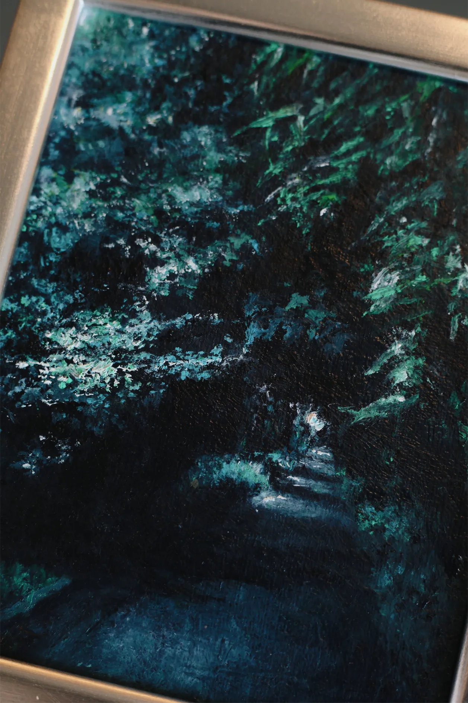

soil
中学時代のネット友達、
十年以上の時を経て
結婚式にご招待いただくまでの間柄となりました
この油絵のモチーフは
盛岡散歩民ならピンとくるであろう、
岩大に続く木漏れ日の道です
絵具をどう重ねていったら
こんな風に光や緑を表現できるのか
自分には全くわからないんだけど
あの場所に吹き抜ける風や音まで
絵から感じるんだ、本当にすごいよね
暗い夜を何度も超えながら
ちゃんとたどり着いた今日、
それぞれの時間を確かに生きていること
何かひとつでも欠けていたら
ここまで来られなかった、
そういう要素が私たちの周りには
たくさんありますが
利益や形にとらわれない
その要素のひとつが
あなたという友人であると思っています
syrup16gを聴いていた人が結婚して、
｢性格とか考え方とか
自分は暗いかもしれないし
後ろ向きかもしれないけど、
それでも踊りたいんだよね｣
とラッキリ聴いていて
なんかいいなあと思いました
ニッチなブランドとか音楽を共有しても
大体既に知っていて怖いですが
靴とか家具とか、おすすめ聞いてみると大変参考になる
のでみなさんも何かほしい時は
是非相談してみてくださいね
（なんの紹介？）
